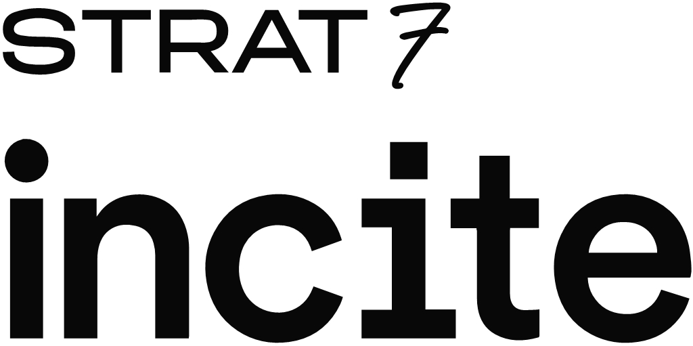
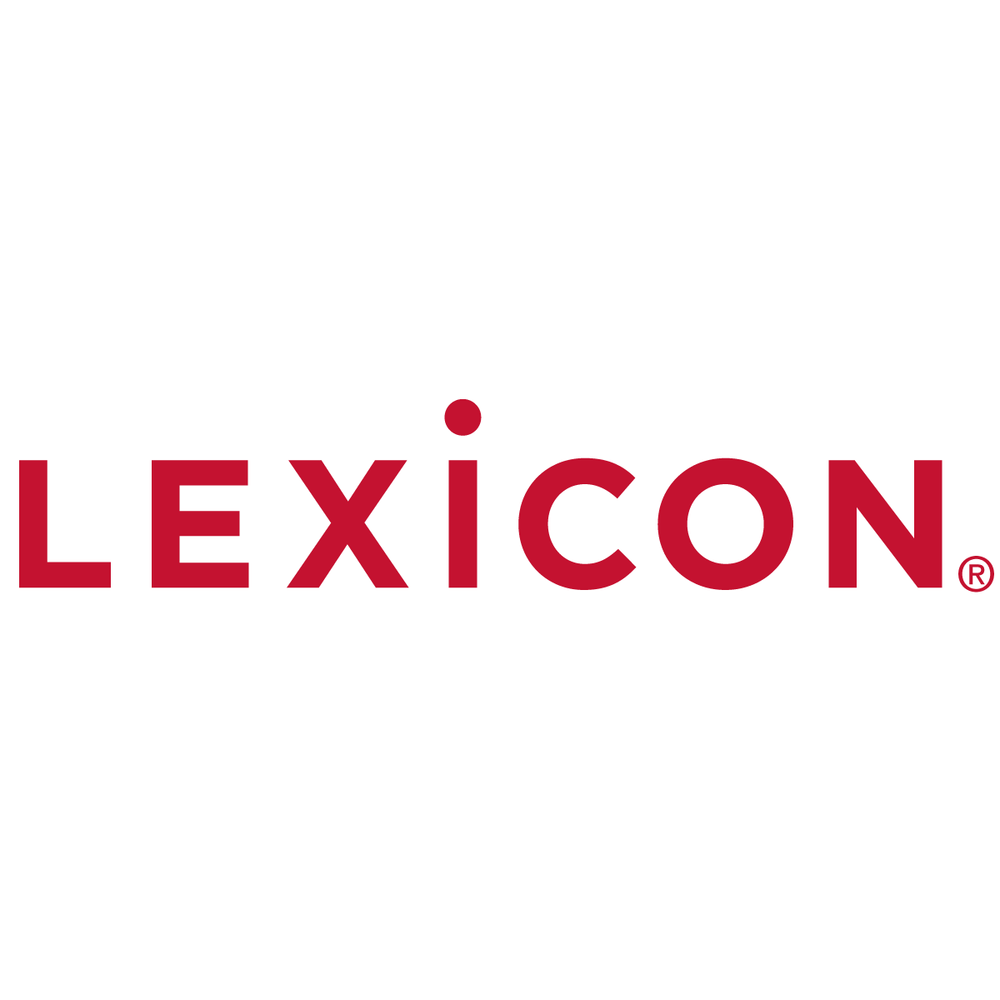

Hello!
I'm Chuck, a data scientist and consumer researcher. I help people understand and act on data.
At Universal Destinations and Experiences, I designed and managed completely custom demand and measurement studies for high-risk, high-budget park events, including the Park’s first Premium Scream Night. The studies I designed, reaching tens of thousands of Park guests annually, are how the Company understands and empathizes with its customers.
At Lexicon Branding, I applied insights from cognitive linguistics to solve sticky branding problems, from (re)naming legacy brands to mitigating the linguistic fallout from marketing decisions already in play. My branding research and consulting informed the naming of Amazon Prime Big Deal Days, Intel Evo Edition and Intel Core Ultra, Cencora (formerly AmerisourceBergen), Expedia Group's Trip Boards and Trip Planner, and Tru Cooperative Bank (formerly First West Bank) among others.
I earned my PhD in Cognitive Linguistics at Purdue University where my research focused on (a) the neurobiology of language and (b) the genesis of novel sign languages. I tackled each from a range of perspectives--from semiotics to neuronal behavior--and a range of methodologies, such as online surveys, psychometric experiments and fMRI studies. Some of my work has even been published or presented at international conferences.
★ My diverse background--from the neuro-imaging of language, brand research, consumer research on theme parks, and consumer insights consulting--has equipped me with a well-rounded toolkit to tackle new problems with creative ease. ★


In my free time, I give free walking tours of the Haight-Ashbury neighborhood as a volunteer for San Francisco City Guides. When I'm not guiding, I'm researching the Hippie Countercultural movement or picking at outstanding puzzles surrounding how new sign languages are born. Riding my bike and tending to my small but mighty garden make me happy. In rainier months, I burn through classic and world cinema.
Digital platform usage stats ● Time series analysis ● User segmentation / Personas ● Social listening
The Client: UDACITY
A Massive Open Online Course program aspiring to make access to high quality coding and technology tutorials equitable and profitable
My role: The following exercise was completed as a take-home assignment for a job opportunity that ultimately resulted in a job offer. The analysis is based off the following publically available dataset. I performed all analyses, visualizations and storytelling.
Timeline: 1 week
01
Context
02
Issue
Since launching in 2014, Udacity amassed a large, devoted user base. However, in 2015, Udacity rolled out a new ‘freemium’ business model, with both free and paid content.
How does this change in business model affect user behavior?
03
The ask
- Track usage statistics in the months following the change to the business model, including:
- Course completion
- Number of courses attempted, and
- Projects completed
- Use social listening channels to identify pain points and opportunities in the learner’s own words.
- Identify user groups and define targeting priorities
- Ensure that Udacity is staying true to its educational values and goals
04
Solution
Variable engineering: Time-series data is extremely rich, but can be hard to interpret by itself. To translate from login times to human behavior, I transformed the data to average time on platform, streaks (number of consecutive days a user visits), and the average number of lessons visited per day, among other emergent behaviors.
Usage statistics: To get an overall landscape of user login behavior, I computed monthly active users (MAUs), daily active users (DAUs), and the ratio of DAUs to MAUs ('stickiness') to get a sense of how deeply a product is embedded into a user's daily routine. Not only is 'stickiness' important for user retention, but also aligns with the company goals to provide equitable online education.
Personas: After plotting usage statistics, including the engineered variables, it was clear that the overall picture wasn't representative of one "average" user. I split the data by customer vs. non-customer, and then used a Bisecting K-means clustering algorithm to split non-customers into smaller groups, creating personas for each to better humanize abstract user behavior. I then performed a sentiment analysis across popular forums, such as Reddit and Course Hero, to extract quotes and give voice to the personas.
Usability testing ● Microcopy evaluation ● Tree testing ● Information architecture
The Client: Intuit / QuickBooks
A B2B software company with an expanding portfolio of accounting and bookkeeping products/ services for small businesses.
My role: Client communication (w/ team); Methodology research and development; Vendor bidding, selection and management; Survey development, Data collection, Story-development & visualization (w/ team)
Timeline: 3.5 weeks
01
Context
02
Issue
Given Quckbook's expanding portfolio of products and services, the client's Creative team developed a newly organized brand architecture to guide users to the correct information / products.
Internal teams at QuickBooks proposed a new brand architecture, but leadership won’t move to adopt it for an upcoming website redesign without quantitative validation.
"We're numbers people"
– QuickBooks Senior Brand Manager
Further, QuickBooks needed consistent language throughout the system that not only helps guide users to content but also creates a positive emotional impact.
03
The ask
- Quantitatively validate the new brand architecture, ensuring that potential customers can painlessly find the information or products they seek.
- Quantitatively and qualitatively motivate a choice among sets of labels at two levels of the architecture. Labels should ideally aid in navigation but also engender positive attitudes among users.
04
Solution
Planning: Our team had never quantitatively validated a brand architecture prior to this engagement. I researched and proposed a new method, tree testing, with A/B testing of labeling candidates. Since Tree Testing was an unfamiliar methodology to both the client and my own leadership, I needed to educate and assure both parties on the basics and distinct advantages of tree testing for brand architecture research before project approval.
Instrument: (1) Online tree-test survey (Optimal Workshop) of 400 small business owners and accountants with A/B testing of brand architecture and 4 sets of labels(4 total versions). (2) Follow-up survey to gauge participants' subjective experience with the architecture and labels.
Reporting: Tree Tests provide a wealth of information, that is, the entire user journey through a menu system--that's too much for a busy client team. To keep things simple, we reported just three main metrics: Success Rate (Did users find what they were looking for?), Directness (Did they find the information without backtracking?), and subjective navigability ratings (Did users think the information architecture was easy to navigate?).
Visualization: Likewise, the standard visualization for tree-testing, a pie tree, is an "eye chart"--not easily digestible even by trained professionals. We opted for a simpler "big number good" strategy, punctuated by color-coded tables for those looking for more information.
Concept testing ● Quantitative Survey ● MaxDiff ● In-depth Interviews ● Usability study
The Client: Microsoft / Copilot
A Senior Project Manager implementing new in-browser AI tools for a major internet browser for a Fortune 10 tech company
My role: Client communication (w/ team), Quant survey development, Quant data analysis, Integration of Qual & Quant results, story-development & visualization (w/ team)
Timeline: 8 weeks
01
Context
02
Issue
The client was anxious about the AI landscape, especially how stand alone Generative AI apps compete with in-browser AI tools, like AI-generated summaries. Given the crowding playing field and novelty of AI solutions, this stakeholder wanted to know everything and fast.
How can the browser boost engagement and growth for AI tools in the browsing experience?
03
The ask
Quantitatively and qualitatively:
- Identify potential opportunities for our AI tool and browser to improve the GenAI + browser experience
- Explore hypothesized AI tool + browser opportunity and dig sites
- Determine the direction for integrated AI tool + browser experience that encourages wider adoption
04
Solution
Consulting: The client brought with him a research plan that included a competitive audit, concept testing, and usage analysis among other methods--way too much for a single study. Through close partnership, I successfully negotiated a much more targeted jobs-to-be-done (JTBD) framework that answered his underlying core question: What does a browser-based Gen AI tool need to do to succeed?
Instrument:Because of the relative “newness” of the AI-tool’s implementation into the browser, there were few a priori assumptions about what pain points and opportunities exist. To that end, we deployed a two-pronged sequential qual-quant attack to obtain a depth of understanding and then to measure it at scale:
- Qual: Sixteen 60-minute online in-depth interviews with AI-tool users
- Quant: Fifteen-minute online survey of 5,001 browser/AI-tool users, cut for generation, browser use (e.g., primarily Chrome, Edge, …), AI tool use (e.g., primarily ChatGPT, Claude, …), and affinity towards AI.
Quant survey detail: The concepts we explored were very much early days. Wireframes were only available internally, and were not ready to be explicitly tested by survey participants. Instead, my team screen recorded a browsing session of one of the concept's main designers/engineers, and wrote a voice-over that not only described what was happening on screen but also explained the potential of the concept. We presented participants with a written copy of the voice-over and had them highlight what aspects of the concept they liked or disliked. To get a sense of what features should be prioritized in development, we used a MaxDiff exercise.
Reporting: We collected a lot of data from a lot of different users--spanning generations, attitudes towards AI and other behavioral and demographic factors. Potentially, everything is relevant! In addition to reporting our top-level findings and recommendations, we prepared a detailed, 150-slide user manual on how to understand the needs, thoughts and behaviors of current and potential AI users. While my team offered long-tail support on this project, the User Manual allowed the client to self-serve on new questions, grab ready-made slides for product discussions with the broader team, and have the information critical to innovate, refine and launch new products at their fingertips.
Mixed methods message testing ● Data-informed message refinement
The Client: LENOVO
Major tech provider looking to target small-medium businesses (SMB) without alienating their Mid-market (MM) & Enterprise-level (LE) base
My role: Client communication (w/ team), Quant survey development, Quant data analysis, Integration of Qual & Quant results, story-development & visualization (w/ team)
01
Context
02
Issue
Buyers in Small Businesses have different priorities than Mid Market or Enterprise business; they wear a variety of hats and may have more complex roles. Their needs may not align with client’s "IT First" approach to marketing for MM and LE.
The client developed a refreshed Value Proposition for SMBs and several Growth Platforms that articulate this value prop. The client needed to make sure messaging resonates with and makes an impact on SMB decision-makers.
03
The ask
Quantitatively and qualitatively:
- Validate that the value prop is aligned with small business needs.
- Determine how to refine the value prop, if needed, to maximize impact among Small Business.
- Likewise, determine whether the Growth Platforms address the key needs of small business, and how to refine them.
- Understand if Growth Platforms articulate and connect to the value prop.
04
Solution
Instrument: We needed to know if our messaging strategy moved the needle with our new audience, Small Businesses, in the face of our competition. Further, we needed to understand why our messaging succeeds (or doesn’t) to (1) make refinements and (2) guide 2026’s messaging strategy beyond the messages tested explicitly in this program. To that end, we deployed a quant-qual program to deliver on measurement and refinement.
- Quant: An online 20-minute survey of 1,800 Business Decision Makers (BDMs) and IT Decision Makers (ITDMs) in small and mid-market businesses in US, Germany, and India
- Qual: Twelve 60-min video In-Depth Interviews (IDIs) among BDMs and ITDMs in small and mid-market businesses in the US
Quant survey design (detail): To get a read on whether and by how much the Value Prop resonates with SMB decision makers and reflects back on the client's brand, we devised the following plan of attack:
- Pre-read on KPIs for client and key competitors– Awareness, Consideration, Preference & key brand metrics (trust, quality, premium, innovative)
- Exposure to value prop, followed by ratings on the value prop’s relevance, clarity, uniqueness, and impact/action. Participants were also invited to reflect on Value Prop resonance in their own words.
- Post-exposure read on KPIs to assess impact of Value Prop exposure
Naming study ● Quantitative survey ● Linguistic analysis ● Consulting
The Client: META
Cross-functional product, engineering and UX team of a global Fortune 100 technology and social media company.
My role: Client communication (w/ team), Vendor bidding and management, Quant survey development and programming (Qualtrics), Fielding and data analysis, Qual discussion guide development, IDIs, Data analysis / Integration of Qual & Quant results, Story-development & visualization (w/ team)
Timeline: 4 weeks per round (multiple iterations)
01
Context
02
Issue
Meta is developing a new digital assistant for their connected device ecosystem. For users to engage this new assistant with only their voice, the client needs a new “wake word” (think: "Hey, Siri!", "Alexa")
There are a lot of moving pieces to naming a wake word:
- Engineering needs something (a) easy for an algorithm to recognize but (b) distinct from everyday conversation (to prevent "false wakes")
- Product and marketing want something unique, memorable and gender neutral
- UX wants something easy and joyful to pronounce across the globe
03
The ask
- Quantitatively evaluate wake word candidates in the US and 5 international markets
- Linguistically evaluate wake word candidates in 19 languages
04
Solution
Instrument: Getting the right wake word is a tall order, with potentially hundreds of millions of people using the word to activate their devices globally.
To understand "whether" a candidate succeeds, we deployed a quantitative survey. We focused respondents on a singular name per survey to extract detailed pros and cons of each name individually and to prevent unknowable methods of comparison between names.
To understand “why” a candidate succeeds, we developed a qualitative discussion guide for in-depth interviews with our team of in-country linguists/brand experts.
- Quant: Quant: A online 20-minute monadic survey of 14,000+ respondents
(28 candidate names ✕ 100 participants per name ✕ 5 international markets) - Qual: 19 In-depth interviews with our in-country linguists
Reporting: We had 28 names to present over the course of this engagement, making it important to give decision-makers the option to "scan" for names that pop and then "study" the specific performance of those names. We used a consistent layout with green/ grey/ red color coding and purposeful icons to allow busy executive to compare between candidates at a glance.
Guest satisfaction ● Competitive analysis ● Brand funnel
The Client: UNIVERSAL DESTINATIONS & EXPERIENCES
Events, Operations, Marketing and other interested parties at the company holding all US-based Universal theme parks
My role: Individual contributor (I performed all analyses, visualizations and storytelling)
01
Context
02
Issue
Halloween Horror Nights (HHN) is an annual Halloween-themed ticketed event running from late August to early December at Universal Orlando Resort (UOR) and Universal Studios Hollywood (USH).
Attendance at HHN 2024 at UOR is softer than in previous years. It has been determined that this softness stems from a diminishing number of unique visitors. At USH, attendance increased in total, but also decreased on a nightly basis.
03
The ask
- Understand why guests did not attend HHN 2024 at UOR, or—more generally—understand what barriers guests weigh when considering attending HHN at either park
- Understand what remediations could be implemented to attract guests in the future. Or, What would it take to revisit HHN next year?
04
Solution
Consulting: Lapsed attendance could arise from a number of factors, so I brainstormed with the stakeholders a number of hypothetical reasons to ask about. Through honest conversation, we arrived at several key hypothetical reasons: Price, Guest experience, Content, Competing events, Marketing & Press, and Deferred attendance (i.e., waiting for Epic Universe to open in 2025).
Instrument: I developed a 20-minute quantitative survey of 2,000+ lapsed HHN attendees (i.e., guests who have gone to HHN in the past but did not go in 2024) with ample opportunity for respondents to express themselves in their own words.
Survey detail: As is typical, Park guests want it all: Lower prices, shorter lines, and bigger scares. However, it's simply not possible for the business to offer all three. For instance, lower prices means more guests and thus longer lines (lower prices with capped attendance is not a profitable solution). Through creative use of ranking exercises, constant sum / points allocation exercises, and forced choice questions, participants were forced to make trade-offs.
Results and reporting: Of course, park guests will come up with solutions that the business neverthelass cannot consider: E.g., What about opening more rides so lines are shorter overall? (Answer: Staffing logistics, including ride techs and extra park security). Thus, my report focused on areas that can feasibly be improved: Queue mitigation, or, make the lines fun to be in. The solution focused on adopting strategies already in place for regular ride queues during regular hours, since they would involve few additional resources to apply to Halloween Horror Nights.
The reporting strategy was to write a detailed memo, with an executive summary and easily navigable body structure. Busy executives can read the summary while individual stakeholders can read the section most relevant to them. Hard figures are interspersed with consumer quotes to understand depth of feeling and breadth of effect.
Writing
Halloween Horror Nights Softness report for Universal Destinations & Experiences
(Internal memo to stakeholders, 2024) [report]
Bradley, C.
Premium Scream Night Guest Satisfaction report for Universal Destinations & Experiences
(Internal memo to stakeholders, 2024) [report]
Bradley, C.
Mobility as a Service Creates Significant Branding Opportunities blog post for Lexicon Branding
(Company blog post, 2022) [blog post]
Bradley, C. and B. Hauk
Note: Researched and written with colleague, Dr. Bryn Hauk. It is company policy to assign sole attribution to the CEO
Sign language learning increases temporal resolution of visual attention. [article]
Karabüklü, S., Wood, S. Sandra , Bradley, C., Wilbur, R. B. , and E. A. Malaia (2025).
Journal of Vision 25(3). doi:https://doi.org/10.1167/jov.25.1.3
Visual form and event semantics predict transitivity in pantomimed actions: Evidence for compositionality. [article] [project on GitHub]
Bradley, C., Wilbur, R. B. (2023).
Cognitive Science, 47: e13331 https://doi.org/10.1111/cogs.13331
Visual form of ASL verb signs predicts non-signer judgment of transitivity. [article]
Bradley, C., Malaia, E., Siskind, J. M. and R. B. Wilbur. (2022).
PLoS One 17(2):e0262098. https://doi.org/10.1371/journal.pone.0262098
Structural Iconicity in Silent Gesture. [article]
Bradley, C.
In Kimmelman, V. and Sze, F. (Eds.) Formal and Experimental Advances in Sign Language Theory, Vol. 4, p. 38–49,
doi:10.31009/FEAST.i4.12.
Transparency of transitivity in pantomime, sign language [Full] [ Summary ▼]
Bradley, C.
PhD Dissertation, 2019
Purdue University
The goal of the project was to uncover similarities in form-meaning correspondence between sign language and pantomime with respect to transitivity coding. In brief, I elicited pantomimes and classifier constructions (a subset of highly imagistic signs in American Sign Language [ASL]) from non-signers and a signer, respectively, that show the manipulation or movement of everyday objects. I annotated these productions for phonetic (purely visual) and phonological (visual, but organized by the grammar of ASL) features and correlated them with transitivity labels (i.e., manipulation: transitive; movement: intransitive). I then used Amazon Mechanical Turk (AMT) to obtain transitivity judgments from non-signers, and correlated these judgments with features of the stimuli as well. Several features accurately predicted both actual and perceived transitivity, suggesting that: (a) without explicit training, non-signers recruit the same visual features for encoding and decoding transitivity in pantomime; and (b) the encoding of transitivity in classifier constructions and pantomime can be predicted using these same features. This suggests that these features have their roots in more domain general cognitive processes (e.g., vision, manual praxis), and suggests specific parameters for communicative strategies that collocutors try or principally do not try. The full dissertation can be accessed via the link above.
Motion events and event segmentation in American Sign Language [Full] [ Summary ▼]
Bradley, C.
Master's thesis, 2013
Purdue University
This project examined verbs of motion and location in American Sign Language (ASL) in light of semantic limits on the amount of spatial information spoken languages exhibit. Such verbs in ASL come in two sorts, lexical verbs (akin to words in spoken languages) and classifier constructions (aka depicting verbs), a set of highly iconic, polymorphemic signs. It was found that lexical verbs pattern like verbs of motion/location in spoken languages, while classifier constructions could provide much richer spatial descriptions. The project provides some discussion on whether path and location are gestural, linguistic or both in classifier constructions, but ultimately concludes that Language is not fully described without the inclusion of possibilities that are uniquely available to sign languages.
Compositionality in ‘Holistic’ Pantomime Characterizes a Gesture-First Proto-Language.
Bradley, C.
Talk given at Expression, Language, Music 1 (August 20–22, 2022)
Top-down and bottom-up sources of meaning in silent gesture. [abstract ]
[youtube]
Bradley, C.
Talk presented at AMLaP2021 (September 2–4, 2021)
Measuring encyclopedic content in silent gesture: Gesture not as vague as once thought.
[abstract]
Bradley, C.
Poster presented at AMLaP2021 (September 2–4, 2021)
Structural iconicity in silent gesture.
[abstract ]
Bradley, C.
Poster presented at the FEAST 2021. Hong Kong. June, 2021.
Systematicity in gesture production, perception may support sign language emergence.
[abstract]
Bradley, C.
Poster presented at the CUNY Conference on Human Sentence Processing 34. Philadelphia, PA, USA. (March, 2021)
Evidence for argument structure in the form of pantomime.
Bradley, C.
Poster presented at Experiments in Linguistic Meaning 1. Philadelphia, PA, USA. (September, 2020)
Evidence for subunit structure when gesturers communicate in/transitive actions. [abstract ]
Bradley, C.
Poster presented at the CUNY Conference on Human Sentence Processing 33. Amherst, MA, USA.
Can formal features be predicted from form? Using Machine Learning to predict transitivity class from the form of pantomime and ASL classifier constructions. [abstract]
Bradley, C.
Poster presented at Formal and Experimental Advances in Sign Language Theory 7. Venice, IT. (Summer, 2018)
Neural representation of minimal syntactic units. [abstract]
Bradley, C., Siskind, J.M., and R. Wilbur
Poster presented at Cognitive Computational Neuroscience 1. New York, NY, USA. (2017)
Rapid processing of ELAN data: quick and dirty numbers for statistical analysis. [abstract]
Bradley, C. and H. Nassar
Poster presented at Formal and Experimental Approaches to Sign Language Theory 6. Reykjavik, Iceland. (June, 2017)
A theoretical look at the Person Agreement Marker in German Sign Language.
Bradley, C. and V. Lee-Shoenfeld
Poster presented at Theoretical Issues in Sign Language Research 10. West Lafayette, IN, USA. (2010)
Contact
charles dot roger dot bradley at gmail dot com
https://www.linkedin.com/in/chuck-Bradley
https://www.github.com/c-huck